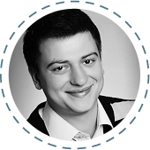
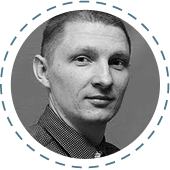
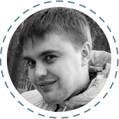
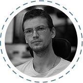
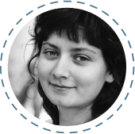

Team GeekHub
-
Eugene Grigoryev Frontend/Backend developer at
Master of Code
Eugene works with a variety of technologies, including Symfony, Drupal, jQuery, Compass CSS, HAML, etc. He oversees a talented team which has created projects like Belvilla, Yes or No, Jongenvrij webshop, USGA and others. In the Geekhub Eugene teaches Frontend end+CMS
-
Timothy Kozak СTO at Presentain

Timothy works on the several projects at the same time - presentain.com, vkorange.com, chedream.org, geekhub.ck.ua. In the Geekhub he teaches iOS.
-
Oleg Pasko CEO at everlabs

Oleg deals with company development in general and with the development of some projects. Oleg implemented projects like Ever.travel – service for trip planning. SeiCrm.com — CRM insurance system and many other interesting projects for different companies.
-
Sergei Bosovskyy Senior Android Developer at

Master of CodeSergei has been developing Android apps for 4 years within Master Of Code company. In the GeekHub he teaches Java for Android.
-
Neek Kurat Managing partner at
Master of Code
Neek deals with business development of Master of Code LLC and presentain.com startup. In the GeekHub team Neek teaches Project Management and works on project branding and marketing.
-
Valentin Yarmolatiy Logistic manager at

Master of CodeValentin helps with technical support on Geekhub.
-
Oleg Zinchenko Symfony Expert in KNPLabs

Oleg is an expert in web development on PHP and PHP frameworks. Adept of Symfony 2 and MongoDB. Team leader and teacher of Advanced PHP course. The latest project is a fitness startup www.exercise.com
-
Tim Phipps English Language Tutor

Since gaining his CELTA teaching qualification, Tim has specialised in private English lessons, meeting a wide range of student needs. At Geekhub Tim leads the Technical English course.
-
Yuri Kurat CEO at N3w Normal
Yuri and his team work on web and cross-platform mobile projects. His latest projects are stickyalbums.com, chewy.com. In the GeekHub Juri deals with the project organization and development.
-
Sergei Kluchnik WEB Developer at
Master of Code
Sergei is an active participant of different open projects. He always tries to find something new in the world of JavaScript. In the Geekhub Sergei teaches JavaScript.
-
Olena Perekopska Project Manager
Master of CodeOlena has a considerable experience in QA and project management. In the Geekhub she leads Quality Assurance course.
-
Volodimir Bilous Senior Java Developer at
SPD-Ukraine
Volodimir is a Java and Android developer at SPD-Ukraine. His main project is nimblecommerce.com. It’s a perfect example of eCommerce SaaS implementation. In the GeekHub he teaches Java for Web.
-
Valeriy Olexienko WEB Developer at
SPD-Ukraine
Valeriy is a backend and frontend web developer. The main technologies he is working with are Spring (MVC, Security), Hibernate, mySql, MongoDB, jQuery, Ext.js. His hobbies are music, snowboard and mobile development. In the Geekhub Valeriy teaches JavaScript.
-
Bogdan Khalyapin CEO at
SPD-Ukraine
Bogdan is a leader of SPD-Ukraine company and deals with its development. He has more than 10 years of experience in Java. In the GeekHub team he is a teacher and a team leader of Java for Web couse.
-
Bogdan Danilyuk Office Lead at
TransferWise
Bogdan is one of the lead developers at TransferWise. He likes quick, dynamic and effecive development solutions. In the Geekhub Bogdan will teach Groovy & Grails - his favorite programming language and its framework.
-
Pavlo Nadolinsky iOS Developer at
MasterOfCode
Pavlo has a very reach experience and would like to share it with you. In the Geekhub he teaches iOS.
-
Dmitro Taryanik Android developer at
Master of Code
Dmitro is Android developer and active participant of GDG Cherkasy. His projects are Heineken Nederland Magazine, LifeChurch Android app, etc. In the GeekHub Dmitro teaches Java for Android.
-
Sergiy Gichka Backend and frontend developer at
Master of Code
ergiy is a web developer. He works with different technologies such as Symfony 1, 2, Zend framework, Drupal, mysql, JS. In the Geekhub Sergiy teaches Advanced CMS.
-
Yuri Batora Lead Java Developer at

SPD-UkraineYuri develops commercial projects with a complex client-server architectures on Java. In the Geekhub he teaches Java for Web.
-
Sergiy Polishchuk Backend developer at
Healthy Code, Inc.
GeekHub student in the past, now he is a backend developer in the successful product USA company. Sergey likes difficult tasks and simple solutions. In the GeekHub he teaches Advanced PHP.
-
Vladislav Yashchuk Backend and frontend developer at
Master of Code
Vladislav is a web developer. He works with different frameworks such as Symfony 2, Yii; CMS - Joomla, Wordpress, Magento. In the Geekhub he teaches Advanced CMS.
-
Andriy Bereza Senior Java Developer at
SPD-Ukraine
Andriy is a certified Java 7 Programmer, who has a reach experience in back-end and front-end development, including financial systems development. In the GeekHub he teaches Java for Web.
-
Yana Semenove Backend developer at
Healthy Code, Inc.
Yana is young and very talented. For several years she has built a successful career in IT. In the GeekHub Yana teaches Advanced PHP.
-
Olexiy Tinyaev Frontend/Wordpress Developer at
N3w Normal
Alex deals with Frontend, AngularJS, Sencha Touch and Wordpress development. He has been working at N3w Normal LLC for several years. In the GeekHub he teaches Frontend + CMS.
-
Dmitro Piskoviy Backend and frontend developer at
Master of CodeDmitro is a web developer. He works with different technologies such as Symfony (1, 2), Zend Framework, Yii, nodeJs, mysql, mongoDB, JS, angular.js. In the Geekhub Dmitro teaches Advanced PHP.
-
Fred Cox CTO at eKreative

Fred has been coding for over 10 years, his first mobile app was published before anyone knew what a smartphone was. Now he the techinal lead at eKreative where the focus is on web and mobile apps. Teaches Javascript at GeekHub.
-
Irina Nikulina QA engineer at MasterOfCode

GeekHub graduate, now works as QA engineer at Master of Code. In the GeekHub Irina teaches Quality Assurance.
-
Vadim Vasilyev Senior Java/G&G Developer at

TransferWiseVadim is a developer at TransferWise. Previously he worked as a developer and adviser in different banks all over the world. In the GeekHub Vadim teaches Groovy & Grails.
-
Sergiy Karpenko Senior Java/G&G Developer at
TransferWiseSergiy is one of the first developers at TransferWise. In the Geekhub he teaches Groovy & Grails.
-
Dmitro Nemesh Backend developer at
MozidevDmitro has been developing web projects for many years. He has an experience of using Yii\Yii2, Symfony 2, Spring 3. Dmitro is a contributor of Yii2 and likes to use new technologies. In the Geekhub he teaches Advanced PHP.
-
Kostyantin Perevozhchikov Backend/Frontend developer

Kostyantin is a freelancer and frontend/backend web developer. His favorite framework is Yii. In the Geekhub Kostyantin teaches Advanced PHP.
-
Alyona Lisitsina Head Project Manager at

Master of CodeAlyona is a PhD and Head Project Manager at Master of Code LLC. In the Geekhub she teaches Project Management.
-
Andriy Lavrenko Frontend developer at MasterOfCode
Andriy works with different technologies such as HTML5/CSS3, jQuery, SASS/SCSS/LESS, CoffeeScript, HAML, Twig, Require JS, Titanium SDK. He adores pure code. In the Geekhub Andriy teaches Frontend + CMS.
-
Viktor Yevpak Managing Director of eKreative

Loves briniging the best in people, helping them realise their potential as professionals and humans. Has a beautiful wife and two amazing children. He is a lawyer by education, enterprenuer by calling and story-teller by hobby. У GeekHub викладає Business English.
-
Bogdan Sviridov Co-founder & Art director at Pixelgrow.co

Bogdan has a reach experience in design. Convenient, simple and clear things are his passion. In the Geekhub Bogdan teaches Web & Mobile Design.
-
Tanya Ignatenko Designer at Pixelgrow.co
Tanya is a web and mobile apps designer at Pixel Grow. She pays attention to small but important items, likes laconic design and cats :) In the Geekhub she teaches Web & Mobile Design.
-
Viktoria Odnokoz Project Manager at ENKI Games

Viktoria is a game designer and project manager of several games. Now she is working on ENKI Games product development. In the Geekhub Viktoria teaches Game Production.
-
Olexandr Bulla Designer at eKreative

Olexandr is a designer at eKreative. In the Geekhub he teaches Web & Mobile Design.
-
Dobroshtan Olga Designer at eKreative

Having understood that she can't live without creativity, Olga switched from pharmacy to graphic design and doesn't regret about her decision. Now she is a web and mobile apps designer. In the Geekhub she teaches Web & Mobile Design.
-
Sergiy Kusiumov Project Manager at Master of Code

Works as Project Manager at Master of Code and as financial adviser at presentain.com startupp. Member of the Geekhub administrative team.
-
Elina Vereshchak Project Manager at Master of Code

Works as Project Manager at Master of Cod. Member of the Geekhub administrative team.
-
Tanya Medvedenko Project Manager at eKreative
Having finished the third season of GeekHub, she decided to make the world better together with the participants of this IT-community:) Member of the Geekhub administrative team.
-
Anastasiya Negoda Klatz Startup
Anastasiya finished the third season of GeekHub and started to work at Klatz startup. Member of the Geekhub administrative team.